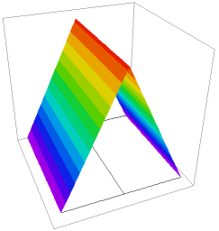

|
contact_resistance_heating |

  
|
|
contact_resistance_heating |
|
{ CONTACT_RESISTANCE_HEATING.PDE
Contact resistance is modeled using the keywords JUMP and CONTACT.
JUMP represents the "jump" in the value of a variable across an interface
(outer value minus inner value, as seen from each cell),
and is meaningful only in boundary condition statements.
CONTACT is a special form of NATURAL, which requests that the boundary
should support a discontinuous value of the variable.
The model is one of "contact resistance", where the outward current across an
interface is given by
R*I = -Jump(V) [=(Vinner-Vouter)],
and R is the contact resistance.
Since CONTACT, like NATURAL, represents the outward normal component
of the argument of the divergence operator, the contact resistance condition
for this problem is represented as
CONTACT(V) = JUMP(Temp)/R
In this problem, we have two variables, voltage and temperature.
There is an electrical contact resistance of 2 units at the interface between
two halves, causing a jump in the voltage across the interface.
The current through the contact is a source of heat in the temperature equation,
of value P = R*I^2 = Jump(V)^2/R
}
title "contact resistance heating"
variables V Temp
definitions Kt { thermal conductivity } Heat =0 Rc = 2 { Electrical contact resistance } rho = 1 { bulk resistivity } sigma = 1/rho { bulk conductivity, I=sigma*grad(V) } temp0=0
Initial values Temp = temp0
equations V: div(sigma*grad(V)) = 0 Temp: div(Kt*grad(Temp)) + Heat =0
boundaries |
 |
Region 1
Kt=5
start (0,0)
natural(V)=0 natural(temp)=0 line to (3,0)
value(V)=1 value(temp)=0 line to (3,3)
natural(V)=0 natural(temp)=0 line to (0,3)
value(V)=0 value(temp)=0 line to close
Region 2
Kt=1
start (0,0)
line to (1.5,0)
contact(V) = (1/rc)*JUMP(V) { resistance jump }
natural(temp) = JUMP(V)^2/Rc { heat generation }
line to(1.5,3)
natural(V)=0 natural(Temp)=0 line to (0,3) to close
monitors
contour(Temp)
plots
grid(x,y)
contour(V) painted
contour(Temp) painted
surface(Temp)
contour(kt*dx(temp)) painted
contour(kt*dx(temp)) painted
elevation(V) from(0,1.5) to (3,1.5)
elevation(temp) from(0,1.5) to (3,1.5)
elevation(dx(v)) from(0,1.5) to (3,1.5)
elevation(kt*dx(temp)) from(0,1.5) to (3,1.5)
end
Page url: index.html?usage_discontinuous_variables_contact_resistance_heating.html